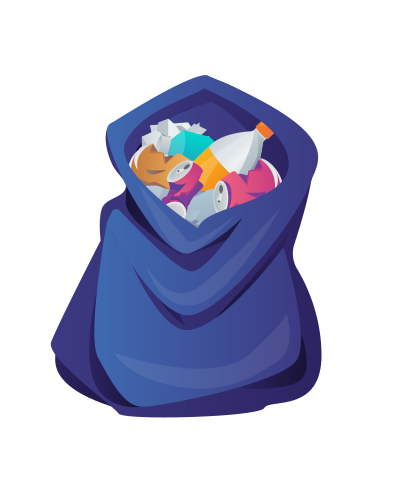
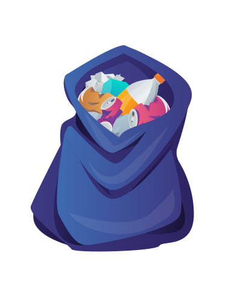
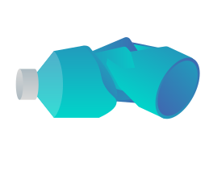

Dit is Dirk a.k.a de Zwerfinator. Hij begon een aantal jaar geleden zelf zwerfaval op te ruimen. Het afval keerde steeds maar weer terug. In 2016 kwam hij met het idee om de data van het afval bij te houden.


 

Elk levend wezen laat "afval" achter wat die niet meer nodig heeft. Dit is een natuurlijke beweging van weggooien. Het probleem is dat we gevaarlijke materialen, die niet biologisch afbreekbaar zijn, hebben toegevoegd aan het naturlijk proces dat zwerfafval heet.


Het is makkelijk om te zeggen "zet meer prullenbakken neer" of "kinderen moeten vanaf jongs af aan beter worden opgevoed". Maar niet iedereen doet bewust mee aan het zwerfafval.


Een voorbeeld hiervan is ballonnen oplaten. Deze zullen uiteindelijk klappen en het restafval komt in de natuur terrecht.

Een ander voorbeeld is afval wat wegwaait de natuur in.


Dingen zoals dit kan je niet oplossen met “laten we gaan recyclen”. Daarom is het ook belangrijk materialen te vervangen met biologische afbreekbare materialen.

Een groot deel van het zwerfafval wat dirk in nederland vind bestaat uit drankverpakkingen Dit kan bijvoorbeeld gaan om:
- blikjes
- plastic flesjes
- dergelijke verpakkingen.

Dirk houdt sinds 2017 data bij over zijn gevonden zwerfafval, hieruit blijkt dat er sinds 2017 gemiddeld 35,4 drankverpakkingen per kilometer worden gevonden.
- 64,7% blikjes
- 22,3% flesjes
- 13% overige verpakkingen

Om aan deze data te komen houdt hij nauwkeurig een aantal punten bij over het afval dat hij vindt. (Geolocatie, soort, merk, type, etc). Zo krijgt hij een goed beeld over het zwerfafval.
In 2020 heeft Dirk er toe geleid dat Rijkswaterstaat, aan de hand van deze data, heeft besloten statiegeld te gaan heffen over kleine plastic flesjes.
Het effect van deze maatregel is goed te zien door de nieuwe data te vergelijken met dat van de afgelopen jaren. In het vierde kwartaal van 2021 vondt Dirk 70% minder plastic flesjes.
